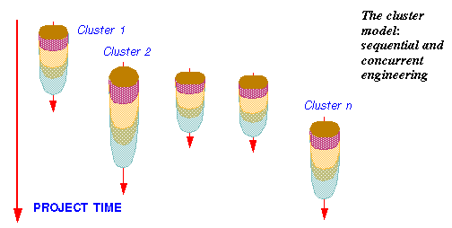
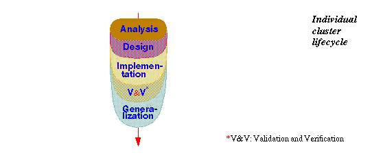

| Eiffel ENViSioN! |
| An Eiffel Tutorial, The Software Process In Eiffel |
|
Eiffel, as noted, supports the entire lifecycle. The underlying view of the system development lifecycle is radically different not only from the traditional "Waterfall" model (implying a sequence of discrete steps, such as analysis, global design, detailed design, implementation, separated by major changes of method and notation) but also from its more recent variants such as the spiral model or "rapid prototyping", which remain predicated on a synchronous, full-product process, and retain the gaps between successive steps. Clearly, not everyone using Eiffel will follow to the letter the principles outlined below; in fact, some highly competent and successful Eiffel developers may disagree with some of them and use a different process model. In the author's mind, however, these principles fit best with the language and the rest of the method, even if practical developments may fall short of applying their ideal form. Clusters and the cluster modelUnlike earlier approaches, the Eiffel model assumes that the system is divided into a number of subsystems or clusters. It keeps from the Waterfall a sequential approach to the development of each cluster (without the gaps), but promotes concurrent engineering for the overall process, as suggested by the following picture: The Eiffel techniques developed below, in particular information hiding and Design by Contract™, make the concurrent engineering process possible by letting the clusters rely on each other through clearly defined interfaces, strictly limiting the amount of knowledge that one must acquire to use the cluster, and permitting separate testing. When the inevitable surprises of a project happen, the project leader can take advantage of the model's flexibility, advancing or delaying various clusters and steps through dynamic reallocation of resources. Each of the individual cluster lifecycles is based on a continuous progression of activities, from the more abstract to the more implementation-oriented: You may view this picture as describing a process of accretion (as with a stalactite), where each steps enriches the results of the previous one. Unlike traditional views, which emphasize the multiplicity of software products -- analysis document, global and detailed design documents, program, maintenance reports … --, the principle is here to treat the software as a single product which will be repeatedly refined, extended and improved. The Eiffel language supports this view by providing high-level notations that can be used throughout the lifecycle, from the most general and software-independent activities of system modeling to the most exacting details of implementation tuned for optimal run-time performance. These properties make Eiffel span the scope of both "object-oriented methods", with their associated notations such as UML and supporting CASE tools (whereas most such solutions do not yield an executable result), and "programming languages" (whereas most such languages are not suitable for design and analysis). Seamlessness and reversibilityThe preceding ideas define the seamless approach embodied by Eiffel. With seamlessness goes reversibility: the ability to go back, even late in the process, to earlier stages. Because the developers work on a single product, they can take advantages of bouts of late wisdom -- such as a great idea for adding a new function, discovered only at implementation time -- and integrate them in the product. Traditional approaches tend to discourage reversibility because it is difficult to guarantee that the analysis and design will be updated with the late changes. With the single-product principle, this is much easier to achieve. Seamlessness and reversibility enhance extendibility by providing a direct mapping from the structure of the solution to the structure of the problem description, making it easier to take care of customers' change requests quickly and efficiently. They promote reliability, by avoiding possible misunderstandings between customers' and developers' views. They are a boost to maintainability. More generally, they yield a smooth, consistent software process that helps both quality and productivity. Generalization and reuseThe last step of the cluster lifecycles, Generalization, is unheard of in traditional models. Its task is to prepare the results of a cluster for reuse across projects by looking for elements of general applicability, and transform them for inclusion in libraries. Recent object-oriented literature has used the term "refactoring" to describe a process of continuous improvement of released software. Generalization includes refactoring, but also pursues a more ambitious goal: helping turn program elements (software modules useful only as part of a certain program) into software components -- reusable parts with a value of their own, ready to be used by diverse programs that can benefit from their capabilities. Of course not all companies using the method will be ready to include a Generalization phase in their lifecycles. But those which do will see the reusability of their software greatly improved. Constant availabilityComplementing the preceding principles is the idea that, in the cluster lifecycle, the development team (under the responsibility of the project leader) should at all times maintain a current working demo which, although covering only a part of the final system, works well, and can be demonstrated or -- starting at a suitable time -- shipped as an early release. It is not a "prototype" in the sense of a mockup meant to be thrown away, but an initial iteration towards the final product; the successive iterations will progress continuously towards until they become that final product. Compilation technologyThe preceding goals benefit from the ability to check frequently that the current iteration is correct and robust. Eiffel supports efficient compilation mechanisms through such mechanisms as the Melting Ice Technology in ISE's EiffelStudio. The Melting Ice achieves immediate recompilation after a change, guaranteeing a recompilation time that's a function of the size of the changes, not of the system's overall size. Even for a system of several thousand classes and several hundred thousand lines, the time to get restarted after a change to a few classes is, on a typical modern computer, a few seconds. Such a "melt" (recompilation) will immediately catch (along with any syntax errors) the type errors -- often the symptoms of conceptual errors that, if left undetected, could cause grave damage later in the process or even during operation. Once the type errors have been corrected, the developers should start testing the new functionalities, relying on the power of assertions -- explained in "Design by Contract™T, Assertions, Exceptions" -- to kill the bugs while they are still larvae. Such extensive unit and system testing, constantly interleaved with development, plays an important part in making sure that the "current demo" is trustworthy and will eventually yield a correct and robust product. Quality and functionalityThroughout the process, the method suggests maintaining a constant quality level: apply all the style rules, put in all the assertions, handle erroneous cases (rather than the all too common practice of thinking that one will "make the product robust" later on), enforce the proper architecture. This applies to all the quality factors except possibly reusability (since one may not know ahead of time how best to generalize a component, and trying to make everything fully general may conflict with solving the specific problem at hand quickly). All that varies is functionality: as the project progresses and clusters come into place, more and more of the final product's intended coverage becomes available. The project's most common question , "Can we ship something yet?", translates into "Do we cover enough?", not "Is it good enough?" (as in "Will it not crash?"). Of course not everyone using Eiffel can, any more than in another approach, guarantee that the ideal just presented will always hold. But it is the theoretical scheme to which the method tends. It explains Eiffel's emphasis on getting everything right: the grandiose and the mundane, the structure and the details. Regarding the details, the Eiffel books cited in the bibliography include many rules, some petty at first sight, about such low-level aspects as the choice of names for classes and features (including their grammatical categories), the indentation of software texts, the style for comments (including the presence or absence of a final period), the use of spaces. Applying these rules does not, of course, guarantee quality; but they are part of a quality-oriented process, along with the more ambitious principles of design. In addition they are particularly important for the construction of quality libraries, one of the central goals of Eiffel. Whenever they are compatible with the space constraints, the present chapter and the rest of this tutorial apply these rules to their Eiffel examples. See also |
| © 2003-2004 Eiffel Software. All rights reserved. |